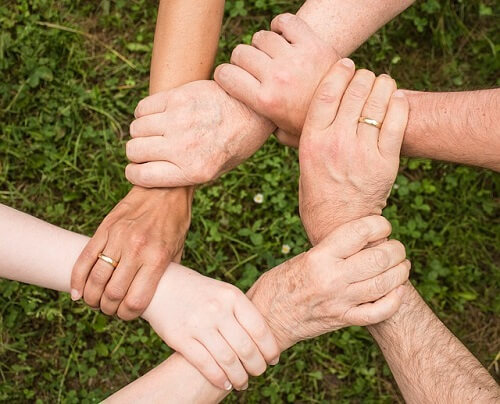

Tullogher Rosbercon LGFA
Our Volunteers
Volunteering
Our club is made up of volunteers of parents and members of the wider community. Our club would not survive without voulunteers giving up their time every week, to help with training, on the committee, fundraising, making tea and coffee on blitz days, match day officials and much more. We are so grateful to all who have given up their time to the club so far.
We also always welcome new volunteers to the club. if you can only spare an hour every year or an hour a week any help is much appreciated.
Please contact our chairman Kevin Cunningham on (051) 1010101 if you would like more information.
Committee Members - 2019
| Chairman | Kevin Cunningham |
|---|---|
| Secretary | Sarah Barron |
| Treasurer | Marie Ryan |
| PRO | Viv Forristal |
| Child Welfare Officer | Ciaran Holohan |
| Registrar | Sarah Barron |
| County Delegate | Sarah Barron |
Trainers - 2019
| U8 & U12 | Ciaran Holohan, Owen O Leary, Martin Flaherty |
|---|---|
| U16 | John Flanagan, Martin Sullivan, Caitriona Ryan |